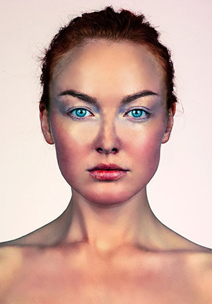

U ovoj vježbi, upoznala sam se s programom Fontforge te uspjela izraditi vlastiti font koji je uključivao slova moga imena te specifične hrvatske slovne znakove te sam se upoznala s formatima .sfd i .ttf.
U ovoj vježbi, bolje sam se upoznala s programom Adobre Illustrator te kao zadatak odradila crtanje Bezierovih krivulja u zadanom koordinatnom sustavu, naučila definiranje sivog tona za ispunu i obrub objekata, debljine linija, slojeve, automatsko crtanje objekata između zadanih objekta i pretvaranje teksta u objekte i izrezivanje maski te sve to pomoću vlastitog fonta.
U ovoj vježbi, naučila sam: uvođenje slika u dokument definiranje swatch boja u RGB, CMYK, HSB sustavima boja, transparenciju, crtanje zatvorenih objekata, multipliciranje i transformacije (rotacija, zrcaljenje, skaliranje), rad sa slojevima (Layers); grupiranje objekata, apliciranje swatch boja na objekte. Sve navedeno se obrađivalo na primjeru cvijeta.
U ovoj vježbi, upoznala sam se s tim kako se izrađuju složeni objekti koji se sastoje od više zatvorenih staza (krivulja), također, naučila sam i dodavanje, oduzimanje staza postojećim objektima te kako se primjenjuju linearni i radijalni gradijent kao i mesh gradijent. Sve to se obrađivalo na primjeru čaše. (Uslijed bolesti, poslana je ispričnica za navedenu vježbu te je ista pokazana prilikom prezentiranja projektnog zadataka.)
U prvom projektnom zadatku trebalo se pokazati što se naučilo od svih tehnika pokazanih na prve četiri vježbe te isto primijeniti za izradu rada na temu iz flore i/ili faune podmorja.
U ovoj vježbi, upoznala sam se s tehnikama digitalnog retuširanja fotografija (u Adobe Photoshopu) za postizanje realističnog efekta i to pomoću: selekcija, uklanjanja nedostataka na slici (zamućivanjem, kloniranjem, kopiranjem selekcije u layere), lokalnih i globalnih korekcija boja na primjeru slika dviju djevojaka.
U ovoj vježbi, bolje sam se upoznala s mogućnostima koloriranja crno bijelih slika - ponajprije sam naučila da selekcijom željenih dijelova slike stvaramo maske kojima skrivamo ili otkrivamo efekte kolorizacije te da se boja aplicira na zaseban sloj kako ne bismo uništili originalne tonove i kako bismo mogli lakše napraviti promjene u kasnijim fazama obrade slike. Obrađivala se slika dječaka i ona vlastita.
U ovoj vježbi, kombinirala sam više fotografija izrezivanjem dijelova različitih slika i spajala ih u jednu cjelinu te manevrirala namještanjem boja i sjena. Ovo je bila meni osobno najdraža vježba.
U drugom projektnom zadatku trebalo se pokazati što se naučilo od svih tehnika pokazanih na druge tri vježbe te isto primijeniti za izradu vlastite fotomontaže pomoću zadanih i vlastitih slika.
U ovoj vježbi, pomoću dvaju programa iz Adobe paketa (Photoshop i Premier), izradila sam prvi kinemagraf analogno uputama u segmentu video vježba projektnog zadatka na primjeru svijeće.

U ovoj vježbi, bolje sam se upoznala s mogućnostima Adobe Premiera u rezanju i spajanju video isječaka iz više izvora, video efektima, brisanju i dodavanju zvuka i dodavanju i obradi teksta na primjeru videa vozača bicikala.
U ovoj vježbi, bolje sam se upoznala s html-om kao takvim te css-om kao zasebnim dokumentom te kako se oboje kombiniraju izradivši prvu stranicu koja je za temu imala vlastiti život i interese.
10. vježba - GITHUBU zadnjem projektnom zadatku trebalo je objediniti znanje u području videa i weba te nadopuniti i unaprijediti znanje iz vježbe o htmlu te izraditi vlastiti video uradak spojen od kinemagrafa i par isječaka.